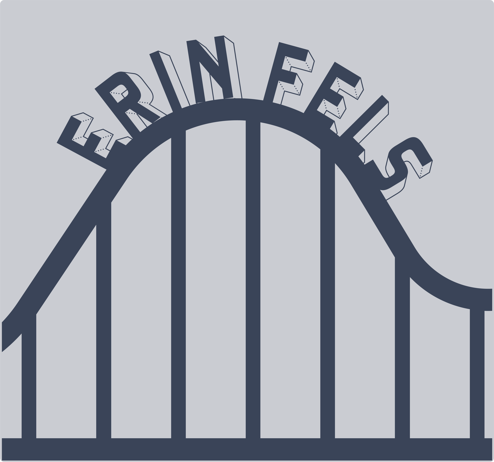

CU Theme Park Engineering and Design Club created the Sunnyside Scrambler to compete in the 2026 Ride Engineering Competition. The scrambler-themed scrambler is designed and documented in adherence with professional ride design standards including ASTM F2291. The team placed second in the west division out of 16 teams. This year I was chosen to be our Theming Electrical Lead, where I not only help creating and make design choices for the entire time but I have also had a hand in writing and creating code for the ride. My job was primarily to work with I2C and create interrupts that will help add our safety related systems. I also have been lead on the graphic design choices of the team from logos to final desicions of what the theme would be.